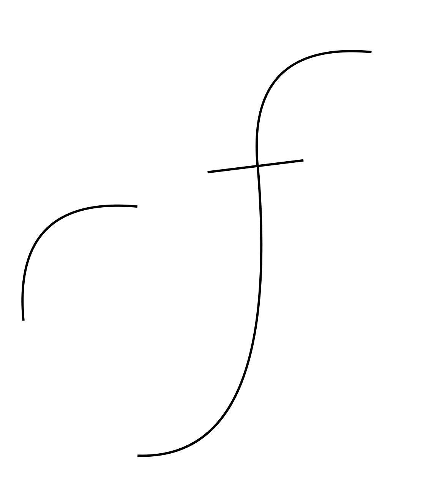
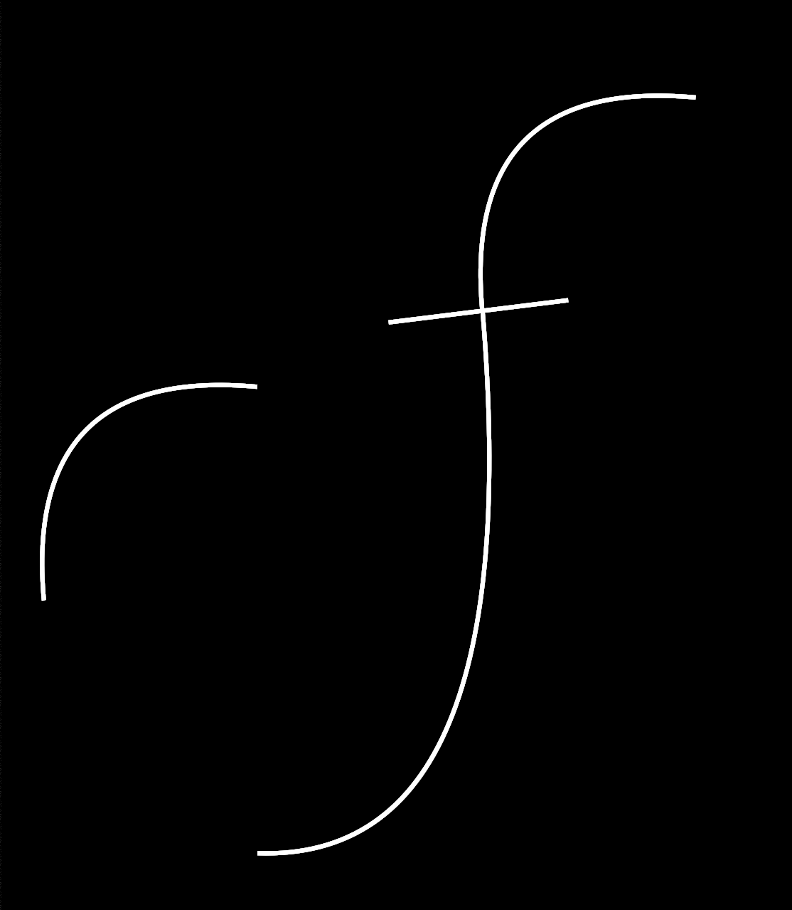
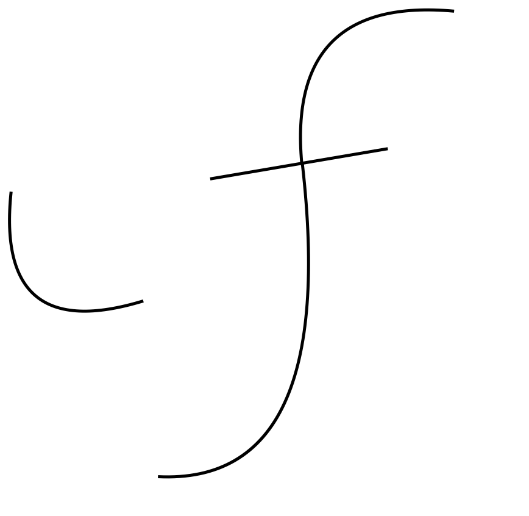
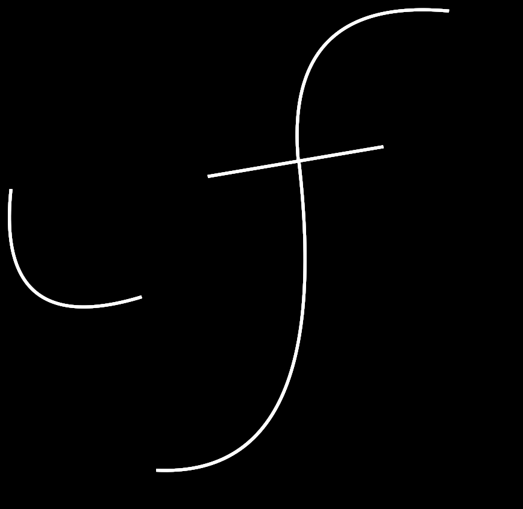
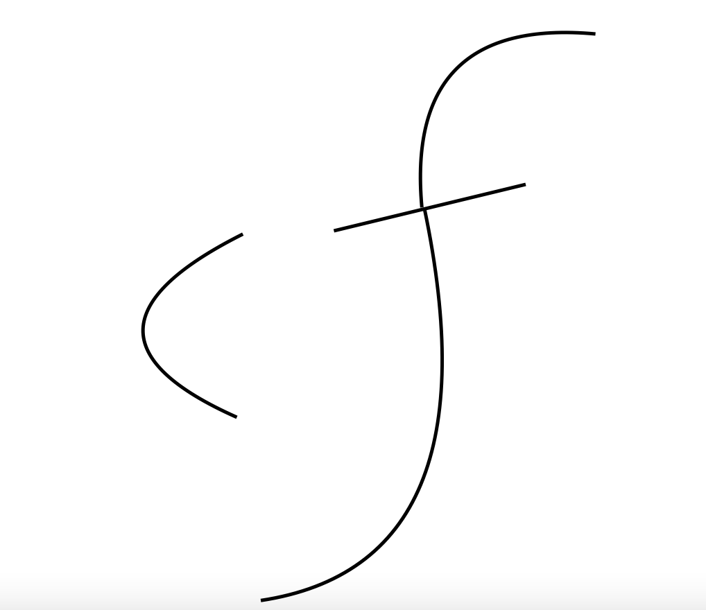
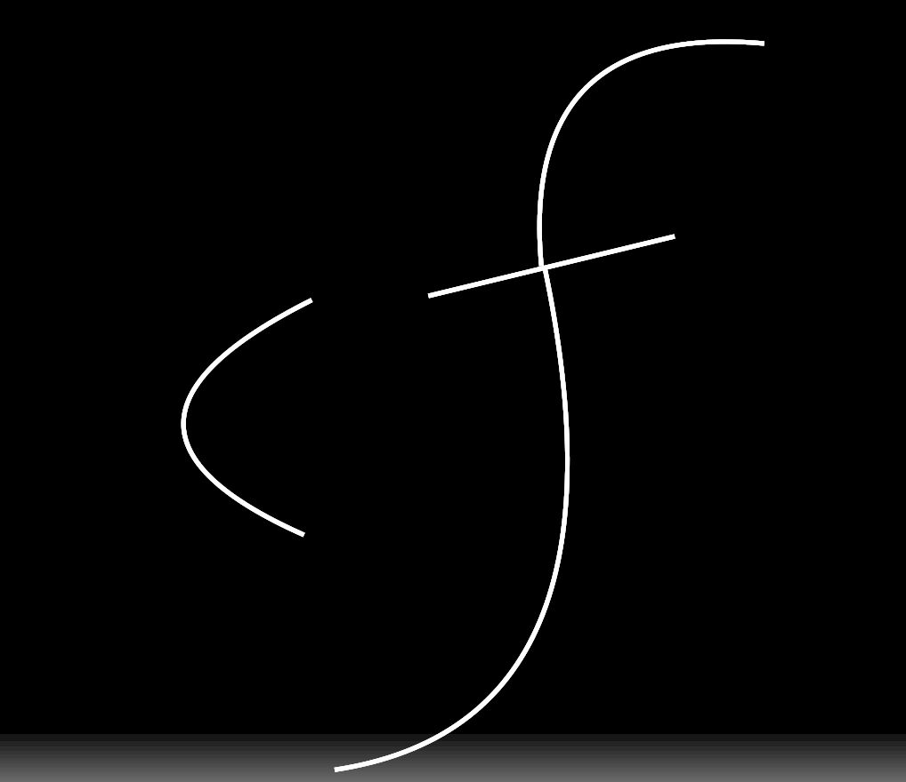
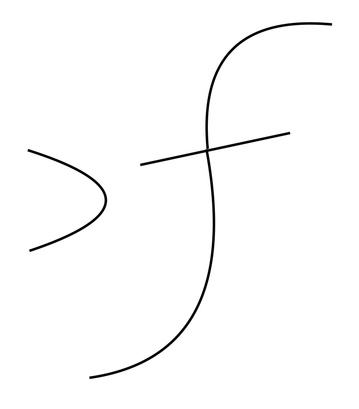

Karrash:The logical and easy language[1]
Note:This page was created for ********************
The cases are listed below:
- -a NOMINATIVE CASE normal words like water,going,beautiful (basically nouns,verbs and adjectives)
-
 
- -ai GENETIVE CASE[2]
-
 
- -e DATIVE CASE to receive some thing;example: I recieve the bread
- -ej POSESSIVE CASE like when you have an inanimate object
- -ew OWNERSHIP CASE when you have an animate object
- -i ACCUSATIVE CASE[3] example:I see a bird
- -o LOCAL CASE e.g. About my brother
- -uî INSTRUMENTAL with{inanimate object}
- -u COMITATIVE with{animate object}
- Footnotes
- Roots and affixes
- Ithkuil website
- Ilaksh website


